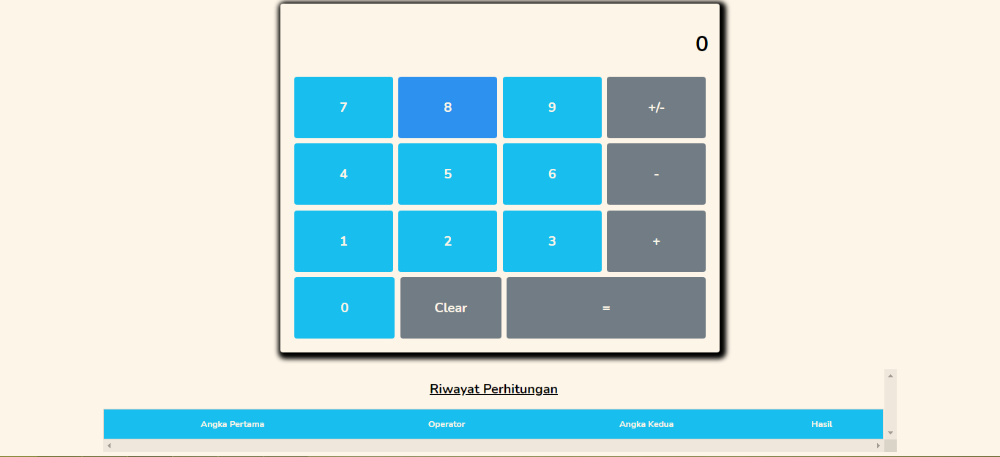

Web Kalkulator
Sebuah aplikasi kalkulator sederhana yang menerapkan teknik CSS Flexbox dan menggunakan Web Storage API, untuk menyimpan data hasil kalkulasi.
Demo Source CodeBerikut ini beberapa proyek yang pernah saya buat :
Sebuah aplikasi kalkulator sederhana yang menerapkan teknik CSS Flexbox dan menggunakan Web Storage API, untuk menyimpan data hasil kalkulasi.
Demo Source CodeLanding page sederhana dengan studi kasus, website pelatihan coding. Yang menerapkan teknik CSS Grid (terinspirasi dari video "Ngobar WPU - CSS Grid" :D)
Demo Source CodeNurussalaf Search adalah sebuah mesin pencari Islami yang berbasiskan database dari Google (Custom Search)
Demo Source CodeAplikasi CRUD dengan studi kasus inventori produk, dibuat menggunakan PHP, MySQL untuk back-end dan Bootstrap 4 untuk front-end.
Source CodeMerupakan aplikasi penghitung luas bangun datar, walaupun masih berbasis command line :), dibuat menggunakan Pascal. Untuk menunya menggunakan perulangan REPEAT UNTIL.
Source CodeMerupakan aplikasi penghitung indeks berat badan (BMI), walaupun masih berbasis command line :), dibuat menggunakan Pascal. Untuk menunya menggunakan perulangan REPEAT UNTIL.
Source Code